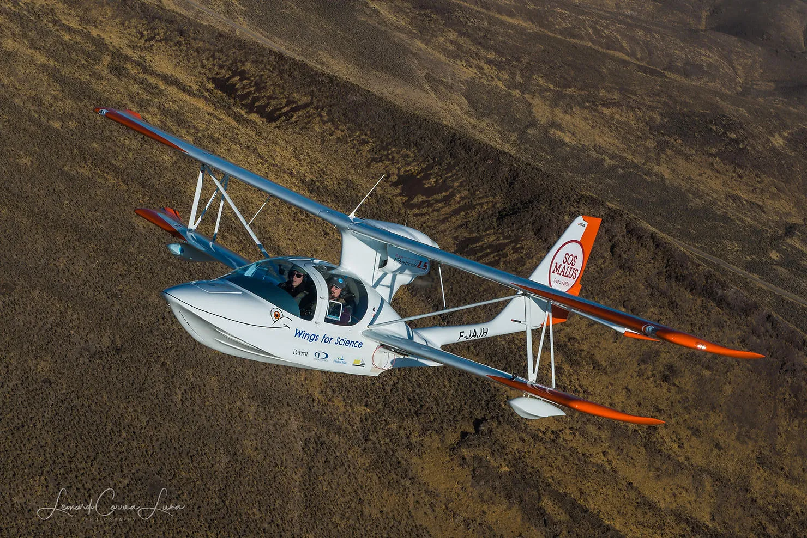
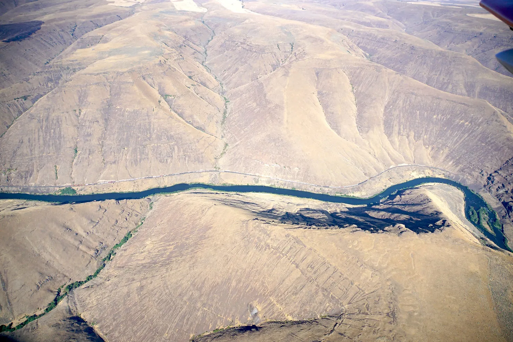
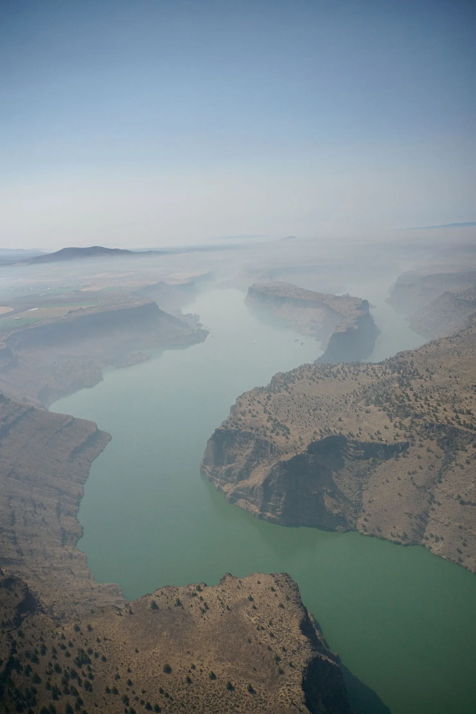
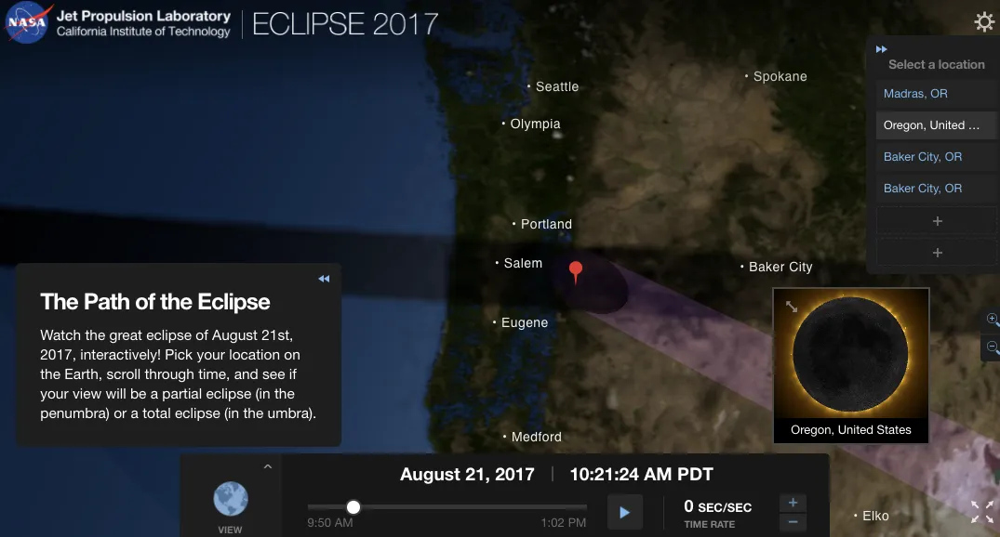

De retour de notre mission canadienne sub-arctique, nous volons vers le sud ouest pour parvenir juste à temps pour l'événement astronomique de l'année : l'éclipse solaire, qui devrait être totale aux Etats Unis ! Tout d'abord, nous traversons les rocheuses, ou plutôt entre les Rocheuses, ces montagnes étant trop hautes pour nous permettre de les survoler ! Nous nous plaçons ainsi dans le creux des vallées, à 7 500 ft les jours de beaux temps (sauf durant les jours où les feux de forêts nous ont obligés à prendre de la hauteur).
A Yellowknife, Fort Smith, Calgary, alors qu'on pensait retrouver le même paysage que celui des Andes, surprise : le paysage était très différent ! Au dessus de nos ailes, des neiges éternelles aux sommets, et sous celles-ci des vallées prospères et verdoyantes, entourant des rivières en dessous, parsemés de charmants villages pastoraux, des fermes de fruits et de vignobles. Superbe !
Pour ce jour si spécial, tout est fin prêt : nos lunettes protectrices, la route exacte du futur trajet de l'ombre de la lune, et nos caméras. Le plan est simple : survoler le lac Billy Chinook à 10h précises en direction du soleil, en hommage à notre parrain Pierre Léna (qui organisa le premier vol de suivi d'une éclipse, en Concorde au dessus de l'afrique, afin de l'étudier en détail...imaginez cela !) Pour nous, pas de vol supersonique pour la science. Mais il reste quand même quelques défis à relever :
- une couverture nuageuse du sol à 8 500 ft, causée par des feux de forêts, réduit de beaucoup notre visibilité

- l'environnement est montagneux, avec des pics supérieurs à notre plafond de vol... on ne peut donc pas les survoler

- le ciel est surchargé : en jetant un oeil sur notre ADSB (une sorte de radar), on aperçoit déjà plus de 30 avions de tous types qui tournent autour de nous ! Sans compter tous ceux que le radar ne perçoit pas, et tous ceux qui sont en train d'arriver...
- et pour compliquer le tout, Adri décrète que ce serait fantastique de live-streamer (partager en direct) notre vol sur facebook !

>> Bilan : mitigé, car le vol a été réussi avec succès, mais le live-stream a échoué (trop de personnes connectées en même temps sur le réseau, ce qui a déclenché un crash de la connexion).
Heureusement que nous avions d'autres caméras à bord qui filmaient en parallèle, nous pouvons donc vous montrer avec deux heures de retard, l'éclipse totale à laquelle on a assisté ! Voici donc la vidéo ci-dessous, acquise rien que pour vous !

Et pour l'anecdote, parce que ça ne transparait pas dans la vidéo : au delà du noir instantané lors du passage de l'éclipse, on a aussi subitement ressenti du froid, l'air extérieur a tout à coup perdu près de 3 degrés, c'était vraiment impressionnant.